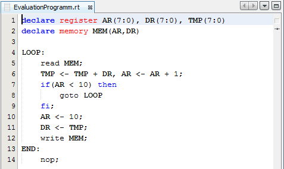

The editor shows the source code of the current project. In the edit mode you can process on the code. The simulation mode shows the current simulation state in the editor window. Note that the simulation mode disables any processing in the editor.
